TowninGraph Master Console
지역 경제구조 해석 시스템 — 사용자 매뉴얼 v0.6
TowninGraph는 무엇인가?
TowninGraph는 지역 경제구조(지가·매출·유동인구·소상공인·파트너 활동 등)를 단백질의 아미노산 시퀀스처럼 펼치고 시간 축으로 분석하는 도구입니다. AlphaFold가 단백질의 3D 접힘을 예측하듯, TowninGraph는 지역의 경제 구조와 미래 변화를 예측·시각화합니다.
1차 사용자: Townin 플랫폼의 마스터(운영자/관리자) 5~20명. 외부 SaaS로 확장 예정이지만 v0.6은 내부 dogfooding 단계입니다.
1.1 첫 실행
python3 -m http.server 8765 실행 (백그라운드 OK)
http://localhost:8765/index.html (Chrome / Safari / Firefox)
simula_data.json 로드가 차단됩니다. 반드시 로컬 HTTP 서버를 통해 접속하세요.
1.2 화면 구조 한눈에
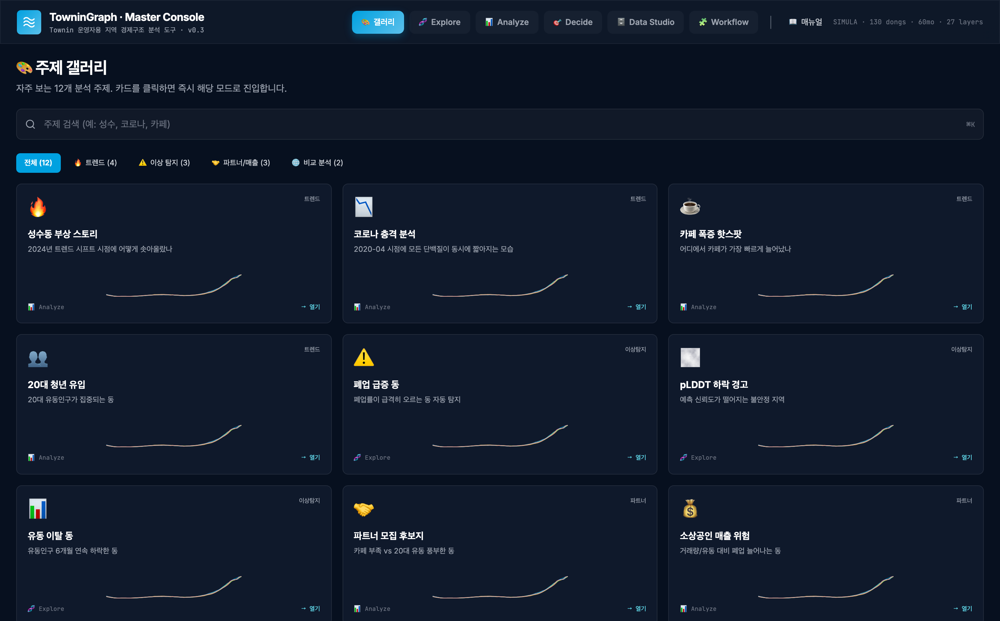
화면은 항상 다음 4개 영역으로 구성됩니다:
| 영역 | 위치 | 내용 |
|---|---|---|
| Header | 최상단 sticky | 로고 + 6개 모드 전환 버튼 + 📖 매뉴얼 + 데이터 메타 |
| KPI Bar | Header 바로 아래 | 전체 데이터 규모 (DONGS / TIME / LAYERS / pLDDT / SHOCKS) — 모든 모드 공통 |
| 3-컬럼 본문 | 가운데 | 좌(데이터·팔레트) / 중(시각화 메인) / 우(상세·결과) |
| Footer | 최하단 | 버전 + 데이터 출처 |
2. 핵심 개념 (이해하면 모든 모드가 쉬워집니다)
2.1 알파폴드 메타포
TowninGraph는 도시를 단백질로, 데이터 레이어를 아미노산 시퀀스로 다룹니다.
| AlphaFold (생명과학) | TowninGraph (도시경제) |
|---|---|
| 단백질 1개 | 읍면동 1개 (130개) |
| 아미노산 시퀀스 (~수백) | 40개 레이어 (지가·매출·유동…) |
| 3D 접힘 구조 | 시간 축으로 펼친 동적 결합 |
| pLDDT 신뢰도 (0~100) | 예측 신뢰도 (TimesFM) |
| 단백질 alignment | Regional Twin Search |
| 활성 부위 (active site) | 경제 흐름의 급변 지점 |
2.2 데이터 구조
130 dongs × 40 layers × 60 months = 312,000 data points
[지역 (130)] [레이어 (40)]
├ 서울 25개 구 × 5개 동 ├ 위치/접근성 (4)
│ ├ 강남구 A1동 ├ 공시지가/임대 (4)
│ ├ 성수1가1동 ★ ├ 부동산 거래 (3)
│ ├ ... ├ 이용객 (9)
└ 부산 5개 동 (Twin 비교용) ├ 소상공인 (7)
├ 위치 (4)
[시간 (60)] └ Townin 내부 (13) ★ 핵심
2020-01 ~ 2024-12 ├ 파트너 활동 (3)
월 단위 ├ 매출 (3)
+ 5건 외부 충격 표시 ├ 유저 행동 (3)
(코로나, 금리, 정책, 트렌드) └ 광고/프로모션 (4)
2.3 pLDDT 색상 체계
모든 화면에서 일관된 색상으로 예측 신뢰도를 표현합니다.
| 색 | 점수 | 의미 |
|---|---|---|
| 90+ | 매우 높음 | 모델이 매우 확신함 |
| 70-90 | 높음 | 일반적 신뢰 가능 |
| 50-70 | 중간 | 주의 필요 |
| <50 | 낮음 | 예측 불안정 (외부 충격 시) |
3. 🎨 갤러리 모드 — 시작점
모든 작업의 시작점입니다. 자주 보는 12개 분석 주제 카드 + 사용자가 저장한 워크플로 카드가 함께 표시됩니다.
3.1 화면 구성
상단 검색바
"성수", "코로나", "카페" 등 키워드로 즉시 검색. ⌘K 단축키로 어디서든 호출 가능.
카테고리 필터 (5개 탭)
- 전체 — 모든 카드
- 🔥 트렌드 (4) — 성수 부상, 코로나 충격, 카페 폭증, 청년 유입
- ⚠️ 이상 탐지 (3) — 폐업 급증, pLDDT 하락, 유동 이탈
- 🤝 파트너/매출 (3) — 파트너 모집, 매출 위험, 광고 집중
- 🌐 비교 (2) — 성수↔부산 Twin, 강남 vs 성수 vs 마포
주제 카드 (3열 그리드)
각 카드에 표시되는 정보:
- 아이콘 + 카테고리 (우상단)
- 제목 + 한 줄 설명
- 5종 데이터 미니 sparkline
- 진입 모드 표시 (📊 Analyze / 🧬 Explore)
- 사용자 카드는 USER 배지 + 노드/엣지 카운트
3.2 사용 절차
4. 🧬 Explore — 자동 인사이트
알파폴드 시그니처 시각화 + 시스템이 자동으로 발견한 패턴을 보여주는 모드입니다. "오늘 무슨 일이 일어나고 있나"를 30초 안에 파악할 때 사용합니다.
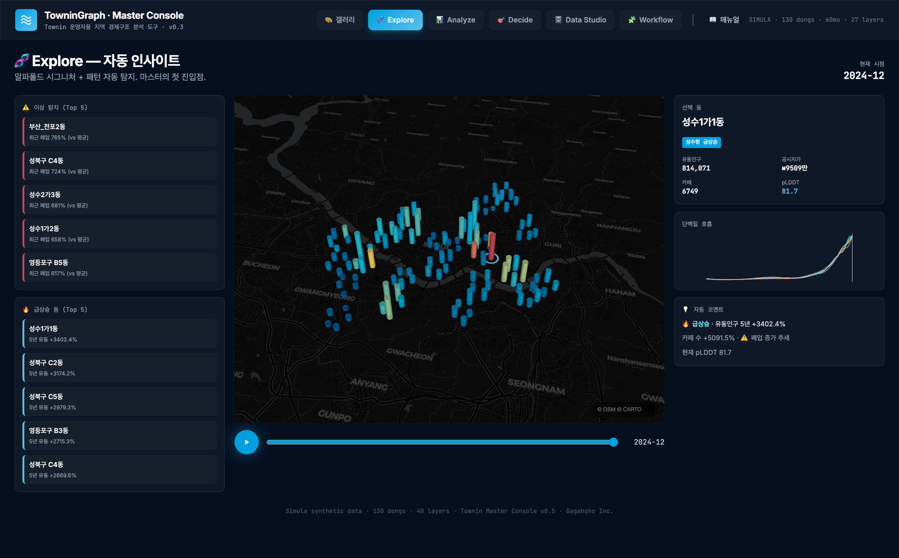
4.1 화면 구성 3컬럼
4.2 좌측 — 자동 인사이트 패널
| 섹션 | 표시 내용 | 클릭 동작 |
|---|---|---|
| ⚠️ 이상 탐지 Top 5 | 최근 6개월 폐업률이 평균 대비 가장 빠르게 상승하는 동 | 지도가 해당 동으로 이동 + 선택 |
| 🔥 급상승 Top 5 | 5년간 유동인구 성장률 가장 높은 동 | 지도가 해당 동으로 이동 + 선택 |
4.3 중앙 — 3D 지도
| 인터랙션 | 동작 |
|---|---|
| 마우스 휠 | 줌 인/아웃 |
| 좌클릭 드래그 | 지도 이동 (pan) |
| 우클릭 드래그 | 3D 회전 (pitch/bearing) |
| 기둥 클릭 | 해당 동 선택 + 우측 정보 갱신 |
| ▶ 재생 버튼 | 60개월 시간 자동 재생 (속도 조절 가능) |
| 슬라이더 드래그 | 특정 시점으로 이동 |
각 기둥의 의미:
- 높이 = 유동인구 (해당 시점)
- 색상 = 카페 수 (낮음=파랑, 높음=빨강)
- 주변 링 = 선택된 동의 pLDDT (예측 신뢰도)
4.4 우측 — 선택 동 디테일
KPI 6종
유동인구 / 공시지가 / 카페 / 신규 창업 / 거래량 / pLDDT
슬라이더 움직일 때마다 실시간 갱신
단백질 호흡 차트
선택 동의 5종 시계열을 60개월 한 그래프에 겹쳐 표시. 외부 충격 5건이 점선으로 표시됩니다.
자동 코멘트
규칙 기반 자동 분석:
- 5년 유동 변화율 + 추세 판정 (🔥 급상승 / 📈 상승세 / ➡️ 안정 / 📉 하락)
- 카페 수 변화율
- 폐업 추세 (증가 시 ⚠️ 표시)
- 현재 pLDDT (60 미만 시 🌫️ 신뢰도 낮음 경고)
5. 📊 Analyze — Tableau식 자유 매핑
가장 강력한 분석 모드입니다. "내가 직접 보고싶은 주제를 만들고 싶다"면 여기를 사용합니다.
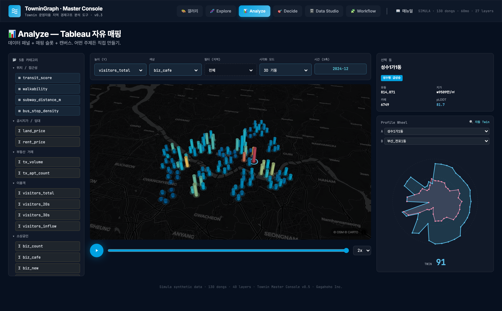
5.1 매핑 슬롯 (5개)
상단의 5개 슬롯을 조합해서 무한히 다양한 분석을 만들 수 있습니다.
| 슬롯 | 의미 | 예시 |
|---|---|---|
| 높이 (Y) | 3D 기둥의 높이를 결정하는 레이어 | visitors_total, land_price, biz_cafe |
| 색상 | 기둥 색상의 강도 (낮음→파랑, 높음→빨강) | biz_cafe, visitors_20s, biz_new |
| 필터 (지역) | 표시할 동의 범위 | 전체 / 서울만 / 부산만 / 급상승 동만 |
| 시각화 모드 | 지도 표현 방식 | 3D 기둥 / 히트맵 / 육각 그리드 |
| 시간 (X축) | 슬라이더로 결정되는 현재 시점 | 2020-01 ~ 2024-12 |
1️⃣ "무엇을 보고싶은가?" → 질문 정의
2️⃣ "어느 데이터가 답을 줄까?" → 높이/색상 슬롯에 매핑
3️⃣ "어느 지역만 볼까?" → 필터
4️⃣ "언제부터?" → 시간 슬라이더
5️⃣ "어떻게 보여줄까?" → 시각화 모드
5.2 3D 지도 (3가지 모드)
| 모드 | 언제 쓰나 | 특징 |
|---|---|---|
| 3D 기둥 | 개별 동의 정확한 값을 비교할 때 | 각 동마다 기둥 1개 + 영역 폴리곤 |
| 히트맵 | 전체 분포 / 핫스팟을 볼 때 | 가중 평균이 부드럽게 퍼짐 |
| 육각 그리드 | 대규모 패턴 / 클러스터를 볼 때 | 800m 단위 hex bin 집계 |
5.3 좌측 — 데이터 패널
40개 레이어를 카테고리별 트리로 표시:
- ▾ 위치/접근성 (4)
- ▾ 공시지가/임대 (2)
- ▾ 부동산 거래 (2)
- ▾ 이용객 (4)
- ▾ 소상공인 (4)
- ... (사용자가 직접 매핑 슬롯에 끌어다 놓을 수 있음 — Phase 3 예정)
5.4 우측 — Profile Wheel (Twin 비교)
두 동의 27개 레이어 프로필을 방사형 차트에 겹쳐서 비교합니다.
사용 절차
| 점수 | 해석 |
|---|---|
| 90+ | 구조적 쌍둥이 — 매우 유사한 경제구조 |
| 80-90 | 강한 유사 — 핵심 패턴 공유 |
| 65-80 | 중간 — 부분 동조 |
| <65 | 구조적 차이 |
6. 🎯 Decide — 임원/시연용 KPI
분석 결과를 한눈에 보여주는 대시보드. 회의실 모니터에 띄우거나 캡처해서 보고서에 넣을 때 사용합니다.
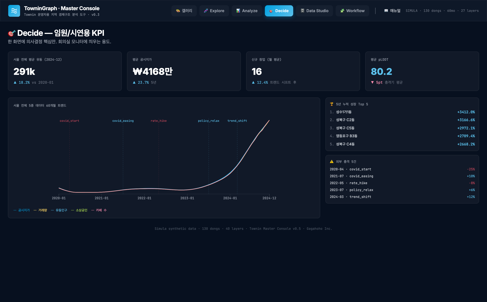
6.1 화면 구성
| 영역 | 내용 |
|---|---|
| 4개 빅 KPI | 서울 평균 유동 / 평균 공시지가 / 신규 창업 / 평균 pLDDT |
| 5종 시계열 차트 | 서울 전체 60개월 평균 5종 데이터 + 외부 충격 5건 표시 |
| 🏆 5년 누적 성장 Top 5 | 유동+창업+카페 종합 성장률 순위 |
| ⚠️ 외부 충격 5건 | 코로나 시작/회복/금리/정책완화/트렌드시프트 |
7. 🗄️ Data Studio — 데이터 인프라 관리
마스터가 데이터 소스를 관리하고 품질을 검증하는 백오피스. 5개 서브탭으로 구성됩니다.
7.1 📥 Sources — 9개 데이터 소스
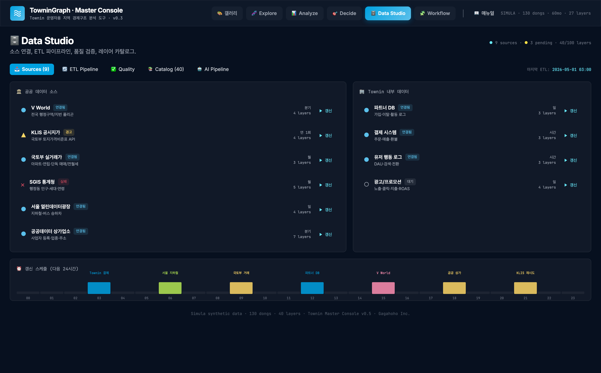
공공 데이터 6개
| V World | 전국 행정구역/지번 폴리곤 | 분기 |
| KLIS 공시지가 | 국토부 토지가격비준표 API | 연 1회 |
| 국토부 실거래가 | 매매/전월세 거래 데이터 | 월 |
| SGIS 통계청 | 인구·세대·연령 | 월 |
| 서울 열린데이터광장 | 지하철·버스 승하차 | 일 |
| 공공데이터 상가업소 | 사업자 등록·업종·주소 | 분기 |
Townin 내부 4개
| 파트너 DB | 가입·이탈·활동 로그 | 일 |
| 결제 시스템 | 주문·매출·환불 | 시간 |
| 유저 행동 로그 | DAU·검색·전환 | 시간 |
| 광고/프로모션 | 노출·클릭·지출·ROAS | 일 |
| 상태 | 의미 |
|---|---|
| ● 연결됨 | 정상 갱신 중 |
| ▲ 경고 | 지연 또는 일부 실패 |
| ✕ 실패 | 최근 갱신 실패 — 즉시 조치 |
| ○ 대기 | 아직 연결 안 됨 |
24시간 갱신 스케줄 strip: 시간대별 막대 차트로 다음 ETL 실행 일정을 한눈에 확인.
7.2 🔄 ETL Pipeline — 5단계 DAG
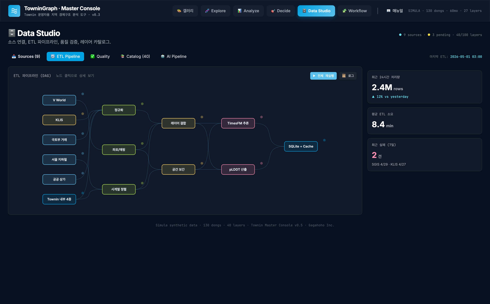
Sources → Ingest → Enrich → Model → Sink
6 │ 3 │ 2 │ 2 │ 1
↓ ↓ ↓ ↓ ↓
(정규화) (좌표/매핑) (결합) (TimesFM) (SQLite+Cache)
(시계열정렬)(보간) (pLDDT)
7.3 ✅ Quality — 데이터 품질 검증
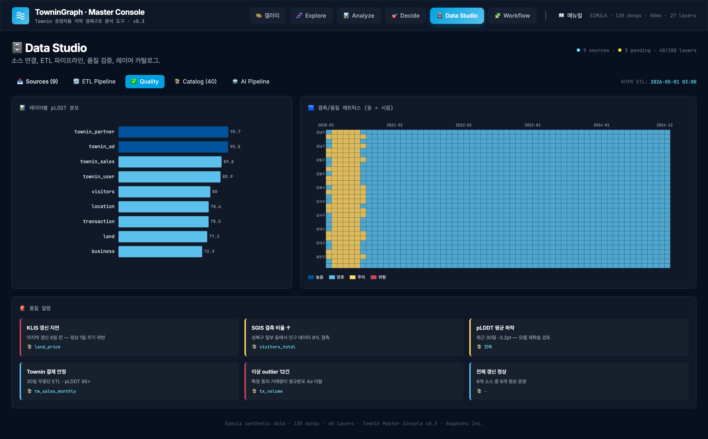
| 패널 | 내용 |
|---|---|
| 레이어별 pLDDT 막대 | 9개 카테고리 평균 신뢰도 (Townin 내부 > 공공 데이터) |
| 결측/품질 매트릭스 | 30개 동 × 60개월 히트맵 — 빈 셀이 결측 |
| 품질 알람 | 6개 카드: 알림(빨강) / 경고(노랑) / 정상(파랑) |
7.4 📚 Catalog — 40개 레이어 사전
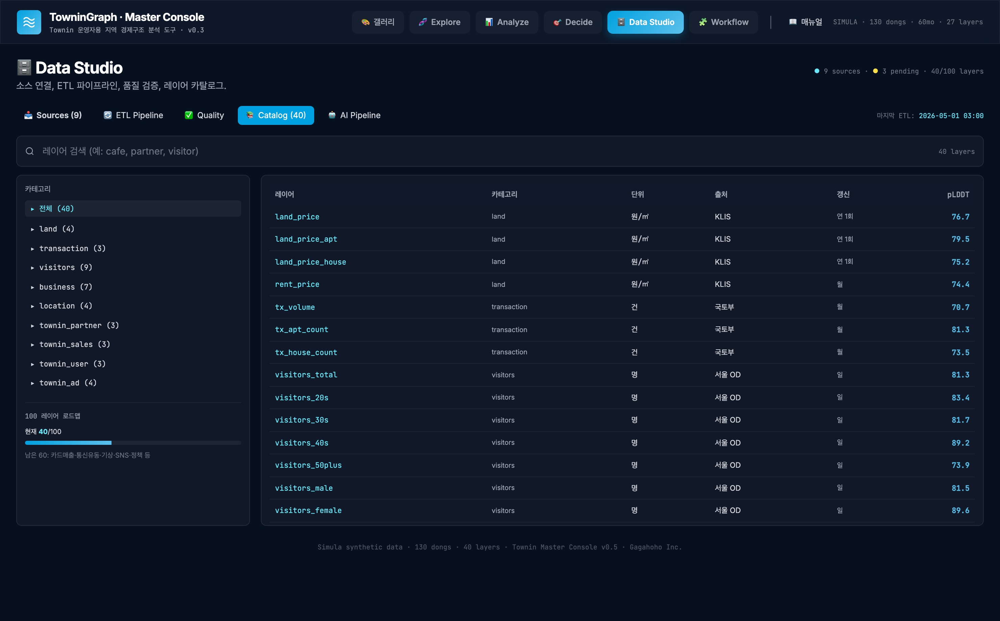
좌측 사이드바
- 카테고리별 필터 (▸ 전체 / 위치 / 공시지가 / 거래 / 이용객 / 소상공인 / Townin 4종)
- 100 레이어 로드맵 진행률 (현재 40/100)
우측 테이블 (40 row)
각 레이어의 정보:
- 레이어 이름 (mono font)
- 카테고리
- 단위 (원/㎡, 명, 곳, 건 등)
- 출처 (KLIS, 국토부, Townin Pay 등)
- 갱신 주기 (시간/일/월/분기/연)
- pLDDT 점수 (색상 표시)
상단 검색창에서 키워드로 즉시 필터링 가능.
7.5 🤖 AI Pipeline — 추론 흐름 DAG
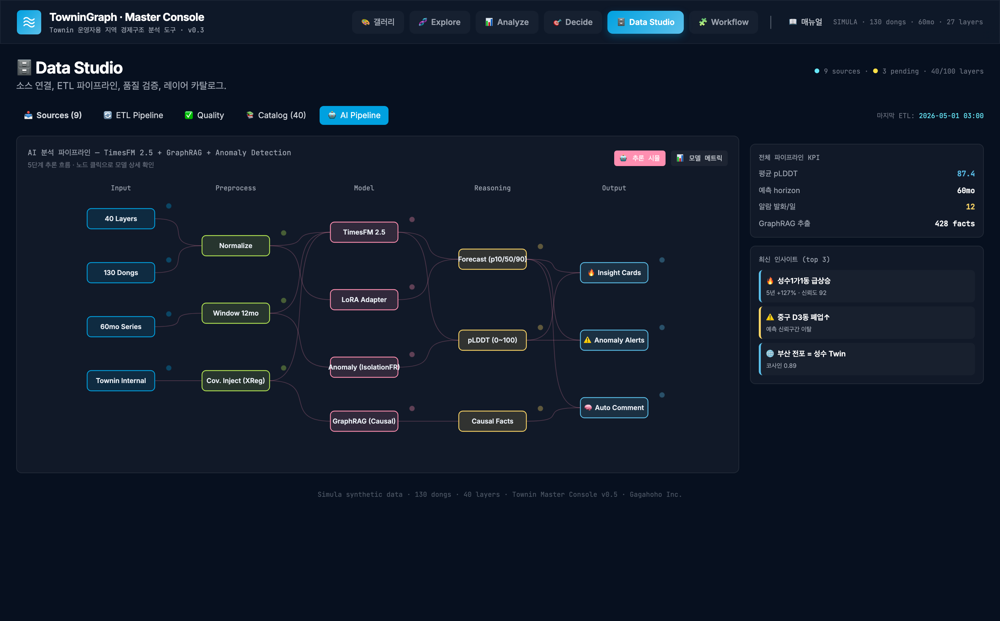
Input → Preprocess → Model → Reasoning → Output 4 3 4 3 3
| 단계 | 노드 |
|---|---|
| Input | 40 Layers / 130 Dongs / 60mo Series / Townin Internal |
| Preprocess | Normalize / Window 12mo / Cov.Inject (XReg) |
| Model | TimesFM 2.5 / LoRA Adapter / Anomaly (IsolationFR) / GraphRAG |
| Reasoning | Forecast / pLDDT / Causal Facts |
| Output | Insight Cards / Anomaly Alerts / Auto Comment |
8. 🧩 Workflow — 노드 그래프 편집기 ⭐
TowninGraph의 핵심 모드입니다. 마스터가 직접 분석 워크플로를 만들고 저장하고 공유할 수 있습니다.
8.1 Preview 모드 (기본)
12개 빌트인 워크플로를 읽기 전용으로 살펴보는 모드입니다.
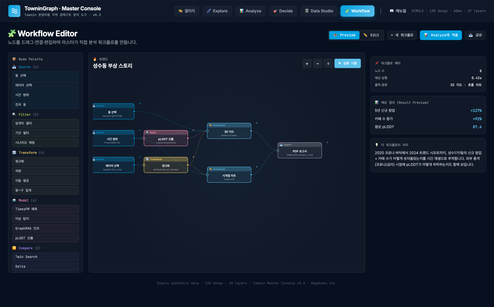
8.2 Edit 모드 (편집)
우상단 토글에서 ✏️ Edit으로 전환하면 캔버스가 편집 가능 상태가 됩니다.
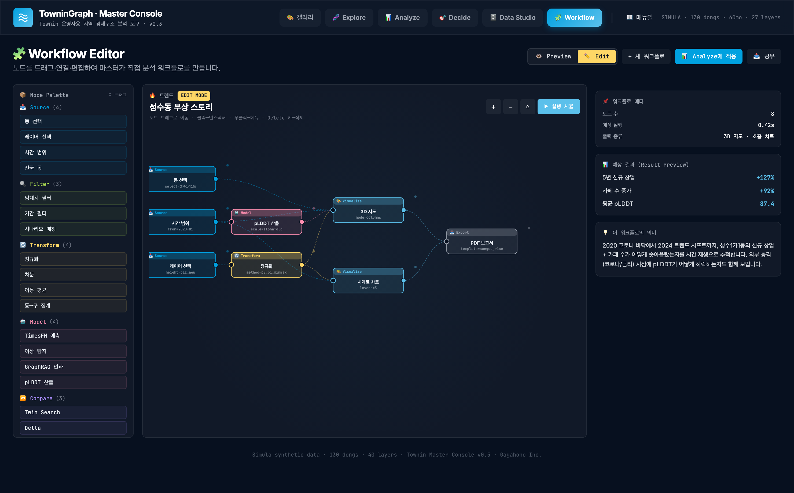
편집 상태 표시
- 상단에 노란 EDIT MODE 배지
- 편집 힌트: "노드 드래그로 이동 · 클릭→인스펙터 · 우클릭→메뉴 · Delete 키→삭제"
- 좌측 팔레트 우상단에 "↕ 드래그" 힌트
- 변경 발생 시 💾 저장 버튼 자동 노출
8.3 새 워크플로 만들기 (전체 절차)
마우스 다운 → 끌기 → 캔버스에서 마우스 업
ghost 노드가 커서 따라옵니다.
좌→우 흐름 (Source → Filter → Transform → Model → Visualize → Export 순)을 권장
• 첫 번째 노드의 오른쪽 포트(채운 원)에서 마우스 다운
• 다음 노드의 왼쪽 포트(빈 원)로 드래그 → 마우스 업
• 입력 포트가 8px로 확대되며 발광 → "여기서 놓으면 연결됨"
• 베지어 곡선이 자동으로 그려짐
예:
{"layer": "biz_cafe", "op": ">", "value": 100}
→ 갤러리에 자동 카드 등록 + 좌측 사이드바 "📁 내 워크플로" 목록에 추가
편집 중 가능한 작업
| 작업 | 방법 |
|---|---|
| 노드 이동 | 본체 드래그 |
| 노드 선택 | 한 번 클릭 (선택된 노드는 진한 테두리 + 그림자) |
| 노드 인스펙터 | 한 번 클릭 → 우측 패널 표시 |
| 파라미터 편집 | 더블클릭 → JSON prompt |
| 노드 복제 | 우클릭 → 📋 복제 |
| 노드 이름 변경 | 우클릭 → ✏️ 이름 변경 (lib name 대신 customLabel 사용) |
| 노드 삭제 (메뉴) | 우클릭 → 🗑 삭제 |
| 노드 삭제 (단축키) | 선택 후 Delete 또는 Backspace |
| 엣지 추가 | 출력 포트 → 입력 포트 드래그 |
| 엣지 삭제 | 해당 엣지 양쪽 노드 중 하나 삭제 (현재 v0.6은 엣지 직접 삭제 없음) |
| 줌 인/아웃 | 우상단 +/− 버튼 또는 ⌂ (리셋) |
8.4 26개 노드 라이브러리
| 카테고리 | 노드 수 | 예시 |
|---|---|---|
| 📥 Source | 4 | 동 선택 / 레이어 선택 / 시간 범위 / 전국 동 |
| 🔍 Filter | 3 | 임계치 / 기간 / 시나리오 매칭 |
| 🔄 Transform | 4 | 정규화 / 차분 / 이동평균 / 동→구 집계 |
| 🤖 Model | 4 | TimesFM 예측 / 이상 탐지 / GraphRAG / pLDDT |
| 🆚 Compare | 3 | Twin Search / Delta / A/B 비교 |
| 🎨 Visualize | 5 | 3D 지도 / 히트맵 / Profile Wheel / 시계열 / 알람 카드 |
| 📤 Export | 3 | CSV / PDF / 공유 링크 |
8.5 저장과 공유
저장 (현재 v0.6)
- localStorage에 JSON으로 저장
- 키:
towningraph_user_workflows - 브라우저 재시작·세션 종료 후에도 유지
- 같은 브라우저 / 같은 도메인에서만 접근 가능
삭제
- 좌측 "📁 내 워크플로" 목록에서 hover 시 ✕ 버튼
- 클릭 → 확인 prompt → 삭제 (localStorage에서도 제거)
- 삭제 시 갤러리 카드도 자동 제거
공유 (Phase 3 예정)
- 워크플로를 .json 파일로 export → 다른 마스터에게 전달
- 클라우드 저장 → URL 공유
- 팀 워크스페이스 → 권한 관리
9. 사용 시나리오 (실전)
9.1 시나리오: 파트너 모집 후보지 찾기
상황: Townin 마스터가 신규 파트너(카페)를 모집할 후보 지역을 찾고 싶음.
핵심 가설: "20대 유동인구는 많은데 카페가 부족한 동" = 골든 스팟
9.2 시나리오: 매출 위험 파트너 조기 탐지
상황: 어떤 파트너가 매출이 떨어지기 전에 미리 발견하고 지원하고 싶음.
9.3 시나리오: Twin Search로 사업 확장 후보 찾기
상황: 성수동에서 성공한 운영 방식을 다른 지역에 적용하고 싶음.
9.4 시나리오: 새 분석 워크플로 작성
상황: 갤러리에 없는 새로운 분석을 만들고 싶음. 예: "야간 유동 분석"
{"layer":"visitors_total"}{"hour":"22:00-04:00"}10. 단축키
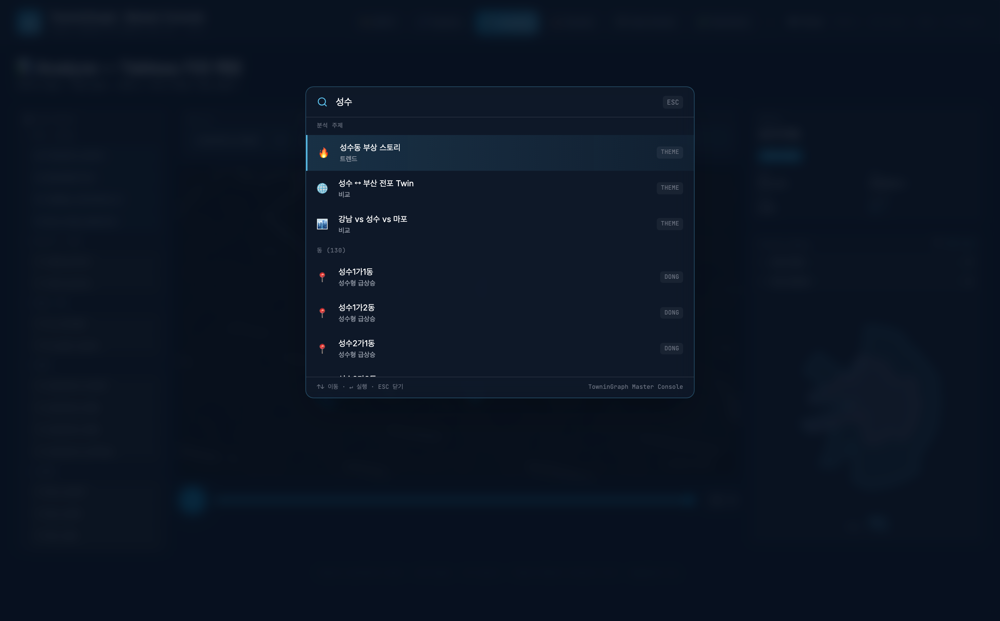
| 단축키 | 동작 | 모드 |
|---|---|---|
| ⌘K / Ctrl+K | Command Palette 열기 | 전역 |
| ↑ ↓ | Command Palette 항목 이동 | Palette 열림 시 |
| ↵ Enter | Command Palette 실행 | Palette 열림 시 |
| Esc | Command Palette 닫기 | Palette 열림 시 |
| Delete / Backspace | 선택된 노드 삭제 | Workflow Edit 모드 |
| 마우스 휠 | 지도 줌 | Explore / Analyze |
| 좌클릭 드래그 | 지도 이동 (pan) | Explore / Analyze |
| 우클릭 드래그 | 지도 회전 (3D) | Explore / Analyze |
| 우클릭 (노드) | 컨텍스트 메뉴 | Workflow Edit 모드 |
| 더블클릭 (노드) | 파라미터 편집 | Workflow Edit 모드 |
11. 트러블슈팅
❌ 데이터 로드 실패 빨간 배너가 보입니다
원인: simula_data.json을 fetch할 수 없음 (파일 직접 열기 또는 서버 미실행)
해결:
cd towningraph_mvp_demo python3 -m http.server 8765 # 그 후 http://localhost:8765/index.html 접속
❌ 지도가 검은 화면만 보입니다 (베이스맵 없음)
원인: CARTO 다크 타일 CDN 차단 또는 네트워크 오류
해결:
- 네트워크 확인:
curl -I https://a.basemaps.cartocdn.com/dark_all/10/873/396@2x.png - 방화벽/VPN 확인
- 다른 브라우저 (Chrome 추천)
❌ Workflow 노드가 드래그 안 됩니다
원인: Preview 모드 (읽기 전용)
해결: 우상단 ✏️ Edit 토글로 전환
❌ 저장한 워크플로가 사라졌습니다
원인: 브라우저 localStorage 초기화 (사이트 데이터 삭제, 시크릿 모드, 다른 브라우저)
해결 (현재 v0.6):
- 중요 워크플로는 정기적으로 백업 필요 (Phase 3에서 클라우드 저장 도입 예정)
- 같은 브라우저 + 같은 도메인 사용
❌ 포트 연결이 안 됩니다
체크리스트:
- ✅ Edit 모드인가?
- ✅ 출력 포트(우측 채운 원)에서 시작했는가? (입력 포트는 시작점이 아님)
- ✅ 입력 포트(좌측 빈 원)에서 마우스 업 했는가?
- ✅ 같은 노드끼리 연결 시도하지 않았는가?
- ✅ 입력 포트가 hover 시 8px로 확대되었는가? (확대 안 되면 연결 가능 영역 밖)
❌ 빌트인 워크플로를 수정했는데 사라졌습니다
원인: 빌트인 수정 시 자동으로 새 워크플로로 복제됨 (원본 보존)
확인: "📁 내 워크플로 (저장됨)" 목록에서 복제본을 찾으세요. 이름은 "제목 (복사본)"
12. 자주 묻는 질문 (FAQ)
Q. 데이터는 실제 데이터인가요?
A. v0.6은 Simula 합성 데이터입니다. 130개 동 × 60개월 × 40 레이어를 수학적 시뮬레이션으로 생성했고, 외부 충격 5건(코로나/금리/정책 등)은 실제 시점에 맞춰 반영했습니다. 실제 데이터 연동은 Phase 3 (Rails 8 + 실제 ETL) 단계입니다.
Q. TimesFM이 진짜 작동하나요?
A. 현재 v0.6은 UI 시뮬레이션만입니다. AI Pipeline DAG와 모델 메타데이터는 실제 TimesFM 2.5 사양을 반영했으나, 백엔드 추론은 Phase 3에서 Vertex AI 연동 시 활성화됩니다.
Q. 100 레이어는 언제 채워지나요?
A. 현재 40/100. 남은 60개는 카드매출(BC카드/신한), 통신유동(SKT), 기상(기상청), SNS 트렌드(네이버 데이터랩), 정책 발표 일자 등이 추가될 예정입니다. Phase 3 ~ 4 단계.
Q. 모바일에서도 사용 가능한가요?
A. v0.6은 데스크톱 우선 설계입니다. 마스터의 사무실/회의실 사용을 가정. 모바일 반응형은 향후 외부 SaaS 출시 시 도입 예정.
Q. 여러 마스터가 동시에 사용 가능한가요?
A. v0.6은 단일 사용자 + localStorage 기반입니다. 다중 사용자/협업은 Phase 3 (Rails 8 + Devise + 멀티테넌트) 도입 시 가능합니다.
Q. 워크플로를 다른 사람과 공유하려면?
A. 현재는 localStorage 안에만 저장되어 직접 공유 불가. Phase 3에서 .json export/import 기능과 클라우드 공유 링크를 도입할 예정입니다. 임시 방법: localStorage.getItem('towningraph_user_workflows') 콘솔에서 복사 → 다른 브라우저에서 setItem.
Q. ⌘K 검색이 동을 못 찾습니다
A. 정확한 동 이름을 입력하세요. 예: "성수1가1동", "강남구 A1동", "부산_전포1동". 줄임말은 지원하지 않습니다.
Q. ▶ 실행 시뮬은 진짜 데이터를 처리하나요?
A. 아닙니다. v0.6은 시각적 시뮬레이션(노드 발광 + 빛 입자)입니다. 실제 노드별 데이터 처리 함수는 Phase 3에서 구현 예정. 시뮬은 "어떤 흐름인지"를 보여주는 데모 목적입니다.
13. 용어 사전
| 용어 | 설명 |
|---|---|
| pLDDT | predicted Local Distance Difference Test. AlphaFold에서 차용한 0~100 신뢰도 점수. TowninGraph에서는 TimesFM 예측 신뢰도를 의미. |
| 읍면동 | 한국 행정구역 최소 단위 (전국 약 3,500개). 시→구→동 계층의 끝. |
| 레이어 | 한 종류의 데이터 시계열. 예: land_price = 60개월 공시지가 시계열. |
| 매핑 슬롯 | Tableau 스타일 드롭다운으로 레이어를 시각 속성(높이/색상 등)에 할당. |
| 노드 | Workflow 그래프의 처리 단위. Source/Filter/Transform/Model/Compare/Visualize/Export 7종. |
| 엣지 | 노드 사이의 연결선. 데이터가 흐르는 경로. |
| 포트 | 노드 좌측(input) / 우측(output)의 작은 원. 엣지의 시작/끝점. |
| 위상 정렬 | DAG에서 의존성 순서대로 노드를 정렬. ▶ 실행 시뮬 시 사용. |
| 워크플로 | 노드 + 엣지 + 파라미터의 집합. 하나의 분석 주제를 표현. |
| 빌트인 워크플로 | 시스템 제공 12개 분석 주제. 수정 시 자동 복제됨. |
| 사용자 워크플로 | 마스터가 직접 만들어 저장한 워크플로. 갤러리에 USER 배지로 표시. |
| Twin | 27 레이어 코사인 유사도가 높은 동 쌍. "구조적 쌍둥이". |
| TimesFM | Google의 시계열 예측 Foundation Model 2.5. 200M 파라미터, 60mo horizon. |
| GraphRAG | Microsoft의 지식 그래프 기반 RAG. 경제 사슬의 인과 관계 추출. |
| LoRA | Low-Rank Adaptation. 큰 모델을 적은 자원으로 파인튜닝하는 기법. |
| Simula | Google Simula. 합성 데이터 생성 솔루션. v0.6의 가상 데이터는 자체 simula_generate.py로 생성. |
| Townin 마스터 | Townin 플랫폼 운영자. TowninGraph의 1차 사용자. |